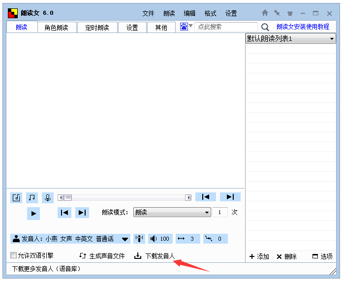
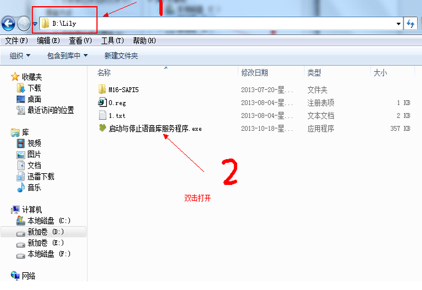
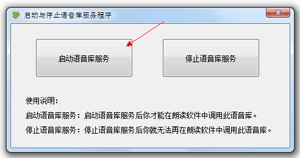
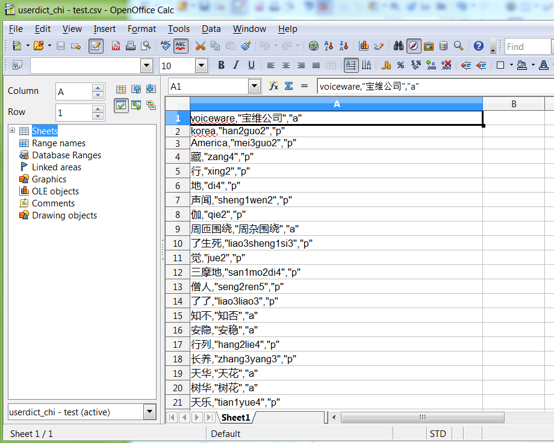

一、在“朗读女”界面中的下部（见下图），点击 “下载发音人” 进入下载页。或者，直接访问下载页（其网址是：http://www.443w.com/tts/?post=2）。

二、进入语音库下载页后，
1、先试听一下语音人的发音效果；
2、如果喜欢，就点击下载链接而下载（如下图）。
三、进入相关网盘地址后，点击下载即可（见下图）：

下载好语音库（发音人）后，按照文件包中的使用说明，安装语音库即可。
一、解压文件
右击所下载的压缩文件（例如“cn-Lily-y.zip”），选择解压到哪一个文件夹。（注意：此文件夹及其上面文件夹的名称，必须都是英语，否则将无法正常工作！）
二、启动语音库
进入刚才解压缩的语音库文件夹，双击“启动与停止语音服务程序.exe” 。

注意：有部分杀毒软件可能会将“启动与停止语音服务程序” 误报成病毒，如果被杀毒软件当病毒杀掉的话，请找回文件，选择信任后再运行即可。

单击：“启动语音服务” 后会出现以下对话框，选择：“是” 。

然后又会出现以下对话框，选择：“确定”，完成语音库的安装。

安装好语音库后，重启“朗读女”，单击“发音人”，弹出“发音人”列表之后，点击刚才安装的那个发音人，就可以用它来朗读文本了。


